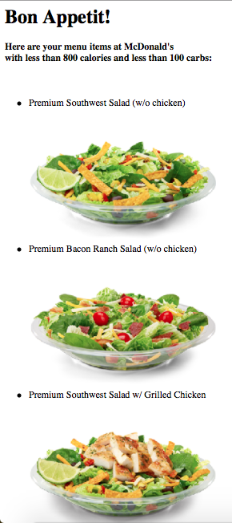
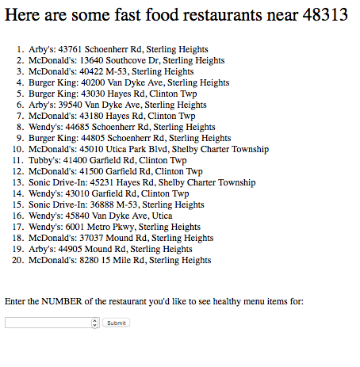
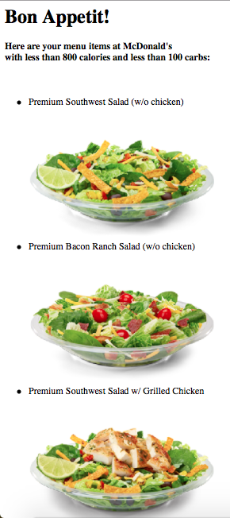
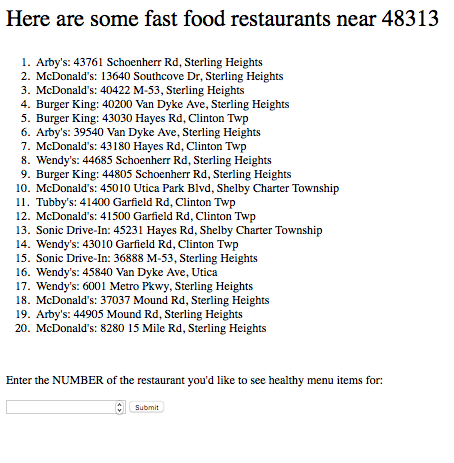

My Role
Individual project for my Intensive Python class. This took about 1 week to make.
Project
This is a simple Flask app written with Python. It’s for busy people who have to eat a fast food meal, but still want to eat something healthy. Runs on your local host. Users can (1) input their zip code, (2) see a list of fast food chains nearby, (3) choose one, and (2) see a list of menu items (names and photos) at that restaurant that are under 800 calories and 100 carbs. Those numbers are based on Livestrong’s per-meal recommendations, with a little leeway, because, well, it’s fast food.
Code
I’ll share my Github link once its graded and API keys are removed. Class definitions Functions for calling/parsing APIs (GooglePlaces for locations and restaurant names, and Spoonacular for menu items) HTML templates Test suite Caching with requests_cache
Screenshots
Get ready to see some vintage HTML circa Web 1.0!
Screenshots
 


